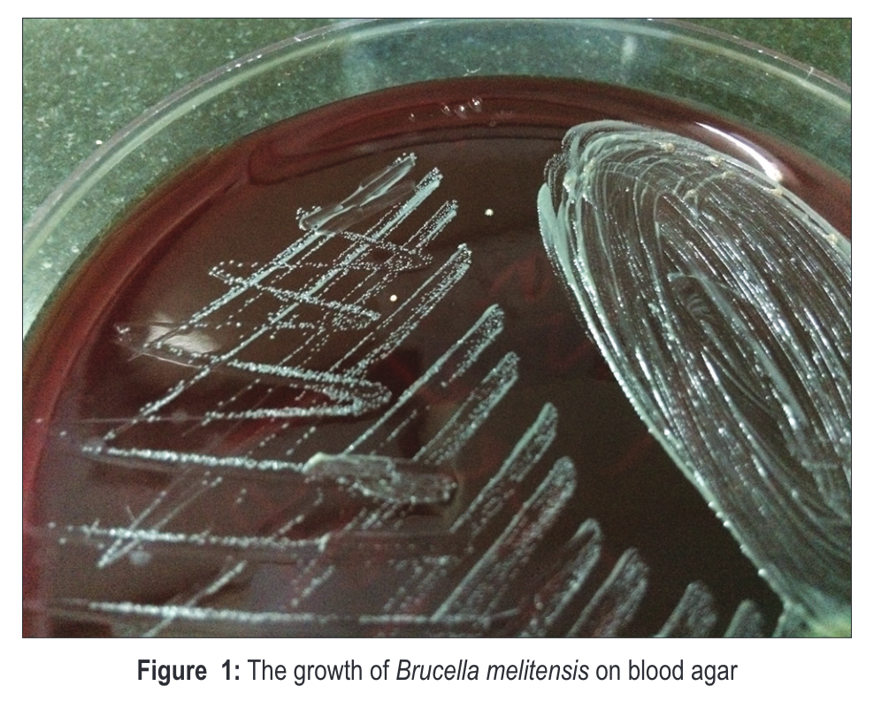
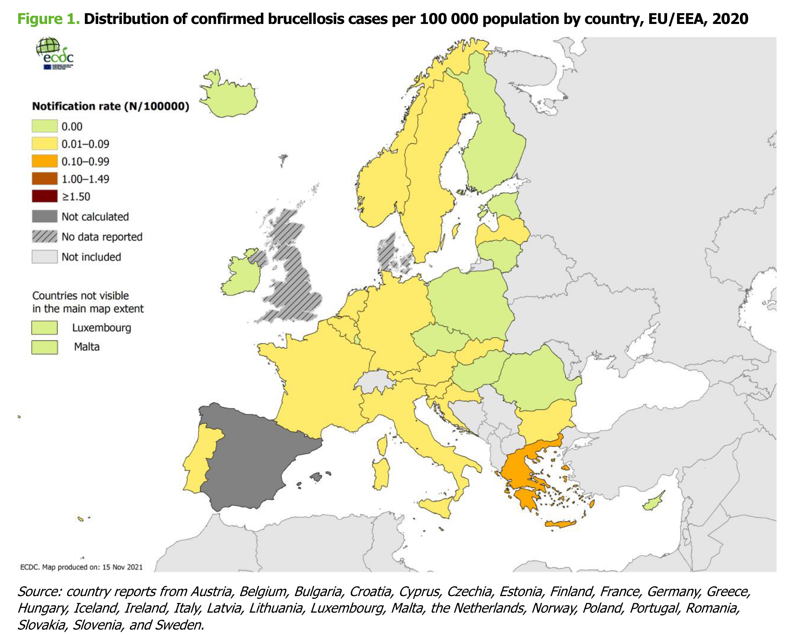

Brucellosis
Brief history of brucellosis
Described in many historical texts, all the way back to Hippocrates in 450 BC:
”Protracted fevers accompanied by ‘tumours’ and joint aches” (Hippocrates, n.d.)
In 1751, Cleghorn describes intermittent tertian fevers in Minorca (Cleghorn 1749).
In 1859, Assistant Surgeon Jeffrey Allen Marston described his own symptoms of “Mediterranean remittent” fever:
There is no fever so irregular as this in its course and symptoms
Sir David Bruce, in 1886, visualised and isolated Micrococcus melitensis from the spleen of a post-mortem patient:
“As it had been found by experiment that the air of the mortuary was peculiarly rich in germs … I removed the spleen to a small room in my quarters, the door and window of which had been keep shut for some time” (Bruce 1887)
Etymology
- Malta fever
- Rock fever
- Undulant fever
- Mediterranean fever
- Gibraltar fever
- Cyprus fever
- Neapolitan fever
- Italian fever
- Crimean fever
- Corps disease
- Satan’s fever
- Scottish delight
- Bang’s disease
- Goat fever
- Fist of mercy
- Milk sickness
- Jones disease
Other important historical milestones
Development of serum agglutination method by Wright in 1897
Isolation of M. melitensis from goats by Temi Zammit in 1905
Against all odds
Zammit’s first attempt at investigated serostatus of 7 goats (H. V. Wyatt 2005):
- all 7 were negative
- it is estimated that at the time, 50% of Maltese goats were positive
- odds of 7 negatives = 1:128
Repeated experiment in 1905 on 6 goats – 5 positive
Importantly, infected goats remained healthy
Mediterranean fever commission
(The Members of the Mediterranean Fever Commission. n.d.)
Sir Temi Zammit led the excavation of Tarxien temples (image c/o Heritage Malta)
Public health measures
Pasteurisation was not introduced until the late 1930
Public health measure to ban goat milk was put in place in 1906 (replaced with imported canned milk).
A milkman strike in protest of the measures likely contributed to disease control (Vassallo 1992).
Bruce and the microbe
David found a little Germ
Its name, of course, you know;
For everywhere that David goes
That name is sure to go.
He found it in a Spleen one day,
And raised a cultured stock;
“With you,” he said “I’ll demonstrate
The postulates of Koch.. ”
David knew a little Boat
That was for New York bound,
With five-and-sixty little goats
That yielded milk all round.
And in the milk that microbe lurked.
(Hence David would forbid it),
And when the men got sick and ill,
“Twas germs,” he said, “that did it.”
Bacteriology of Brucella spp
- Gram negative coccobacillus
- Evolved from environmental soil organisms
- “Triple positive”:
- Oxidase positive
- Catalase positive
- Nitrate positive
Brucella colonies

Brucella Gram stain
Pathogenesis and immunity
Intracellular survival protects organism:
- therapeutics depend on antimicrobials with high intracellular concentrations
- long-term survival causes recurrence and treatment failure
Incomplete immunity
Species
In 2020, the Ochrobactrum genus was controversially assigned to the Brucella genus (Moreno et al. 2022)
| Species | Preferred zoonotic host |
|---|---|
| B. melitensis | goats, camels |
| B. abortus | cattle |
| B. suis | pigs |
| B. canis | dogs |
| B. ovis | sheep |
| B. pinnipedialis | sea mammals |
Transmission and risk factors
| Modality | Mechanism |
|---|---|
| inhalation | aerosols |
| ingestion | dairy products |
| direct contact | inoculation/hypersensitivity |
| uncommon | human breast milk sexual blood transfusion bone marrow transplant |
Worldwide epidemiology
European epidemiology
(European Centre for Disease Prevention and Control 2022)

Clinical features of brucellosis in humans
Travel history is undoubtedly the most important question
Fever is the most important finding – classically undulating (waves) or remittent (comes and goes), although rarely seen
Musculoskeletal symptoms – differentiate febrile myalgia from localised bone and joint involvement
History may be long
Most patients are not severely unwell (if so, suggests infective endocarditis)
Any organ can be involved
Undulant fever
Diagnosis – culture
Culture is unequivocal evidence of infection (i.e., Brucellae do not colonise)
Blood culture:
- sensitivity probably around 40-50%
- requirement for extended incubation times is less important if using automated incubator
Bone marrow has higher sensitivity – 60%
Other sites – joints, abscesses, etc.
Identification – MALDI-TOF is good, but defaults to B. melitensis
Laboratory risk
Significant laboratory risk – probably the most important laboratory pathogen (Traxler et al. 2013)
Largest laboratory outbreak reported in Lanzhou, China (2019) (Pappas 2022)
An inadequacy in sanitizing processes in a biopharmaceutical plant in Lanzhou, China, during July and August 2019, led to the aerosolization of Brucella that was subsequently spread through wind to nearby settlements and academic institutes, resulting in more than 10 000 human brucellosis cases…
…officials responsible for the leak have been identified and punished…
UK guidelines
Guidance on UK management available on BRU website (punishment for responsible microbiologists is not specified)
Castañeda medium
Diagnosis – serology
Wright’s Serum Tube Agglutination remains the gold standard test – unchanged for over 120 years
Procedure:
- Set up serial dilutions of the test serum
- Add antigen (heated B. abortus) to tubes
- Incubate overnight
- Agglutinating serum forms clumps in the bottom of the tube
- Non-agglutinating serum remains cloudy, with no clumps
B. canis lacks LPS, therefore needs specific serology
SAT
Prozone effect
Interpretation of serology tests
Variation between runs and interpreter – quality assurance is critical
Ideally demonstrate 4-fold increase in titre
An absolute cut-off is hard to define – certain titres may be tolerated in endemic areas
1:160 is the most agreed on cut-off
Other agglutination tests, e.g., Rose Bengal, work the same way
Diagnosis – PCR
Around 80% sensitive
Useful, but beware of idiosyncratic prolonged positivity
Case study
Clinical suspicion should be raised by presence of fever and travel to or residence in an endemic area (+/- consumption of high risk food)
Chronic infection and end organ involvement is challenging:
53-year-old man presented (Saudi Arabia) with ankle pain and swelling. No fever, animal contact, raw milk consumption reported. Routine observations and bloods normal. X-ray of ankle normal. Brucella serology 1:160. Treated with oral flucloxacillin. Bone scan showed uptake in ankle and great toe. Blood cultures negative, but synovial fluid culture of ankle joint grew B. melitensis. Repeat serology 1:640
(Adapted from: Madkour (2001))
Treatment
Susceptibility testing is not helpful, although note that B. abortus live vaccine strain is inherently rifampicin resistant
Two agents minimum
Duration:
- Uncomplicated/acute – 6 weeks
- Chronic/complicated – 12 weeks
Antimicrobial agents
In order of likely efficacy:
- doxycycline & streptomycin (or gentamicin)
- doxycycline & rifampicin
- doxycycline & co-trimoxazole
Children (under 8) and pregnancy – rifampicin & co-trimoxazole
Global Impact
Brucellosis is likely to be the most common worldwide zoonotic disease
Although mortality rare, morbidity and loss of productivity due to illness is high
Brucella canis will continue to be of increasing concern in Europe and US
Lanzhou outbreak shows why Brucella spp continue to be recognised bioterrorism agents
Further reading
On laboratory acquired infection: Traxler, R.M., Lehman, M.W., Bosserman, E.A., Guerra, M.A., Smith, T.L., 2013. A literature review of laboratory-acquired brucellosis. J Clin Microbiol 51, 3055–3062. https://doi.org/10.1128/JCM.00135-13
On diagnostic methods: Yagupsky, P., Morata, P., Colmenero, J.D., 2019. Laboratory Diagnosis of Human Brucellosis. Clin Microbiol Rev 33, e00073-19. https://doi.org/10.1128/CMR.00073-19
On epidemiology and control: Corbel, M.J., Food and Agriculture Organization of the United Nations, World Health Organization, World Organisation for Animal Health, 2006. Brucellosis in humans and animals.
Others: Brucella Reference Unit website – flowcharts for laboratory exposure and request forms
CDC Brucella Reference Guide – useful general information
{kind=link}